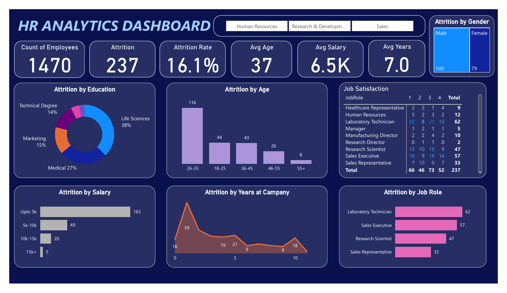

HR Analytics & Attrition

A workforce report that brings employee counts, attrition rate, average age, salary and tenure into one view, with a department filter for focused analysis.
HR AnalyticsAttritionKPI Reporting
Explore the report scope
Analysis question: How is employee attrition distributed across the workforce?
Report views: Attrition by education, age group, salary band, job role, tenure and gender, plus a job-satisfaction matrix.
Interaction: A department slicer supports comparison of workforce segments alongside the headline metrics.